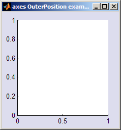
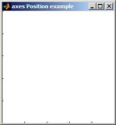

2.1:
Position vs OuterPosition

Typically one
would position some axes using their "OuterPosition" so that the axis labels, title
and other annotations are all contained within the specified area. Sometimes,
particularly if drawing images, one might want to instead make the axes
canvas (the white bit!) fill the specified area. This is done by setting
the "Position" property instead.
For example:
figureaxes( 'Units', 'Normalized', 'OuterPosition', [0 0 1 1] )
figureaxes( 'Units', 'Normalized', 'Position', [0 0 1 1] )

© 2010 The MathWorks Ltd• Terms of Use• Patents• Trademarks